Mo 2026-06-08
Zugseil
Long
2:30h @203W
2026-06-08 bis 2026-06-14
2:30h @203W
25min @135bpm
45min @203W
45min @135bpm
W23 war trainingswissenschaftlich vor allem eine Übergangswoche: Nach der Pause wurde wieder echte Trainingsstruktur aufgenommen, gleichzeitig entstand durch das Wochenende bereits eine deutliche akute Belastungsspitze. Der Charakter der Woche war deshalb nicht einfach "Wiedereinstieg", sondern eine Kombination aus spezifischen Qualitätsreizen, solider Schwimmarbeit und sehr viel aerober Radzeit. Geplant war eine stabile Standardwoche mit Long Bike, Aerobic-Swim, Bike-VO2max, Run-Tempo/Threshold, Basic Bike und Long Run; tatsächlich wurde das frühe Long Bike verkürzt, dafür wurde die Radbelastung am Wochenende massiv größer. Diese Verschiebung ist wichtig, weil sie den Trainingsreiz stärker in Richtung aerobe Radverträglichkeit und muskuläre Ausdauer verschoben hat, während die Laufverträglichkeit nicht im gleichen Maß mitgewachsen ist. Der Swim-Kontext ist positiv: Der Aerobic-Short-Swim und der CSS-Test zeigen, dass die Schwimmstruktur nach der Pause wieder greift und die aktuelle Schwimmbasis mit 1:35/100m belastbarer eingeordnet werden kann. Auf dem Rad war die Woche sehr stark, weil das VO2max-Workout die hohe Intensität sauber getroffen hat und das Wochenende zusätzlich lange aerobe Belastbarkeit gezeigt hat. Das ist kurzfristig für Rothsee hilfreich, weil es die olympische Intensität unterstützt, und langfristig für den Ironman 2027 relevant, weil lange Radzeit wieder gut toleriert wurde. Der Lauf ist dagegen ambivalenter: Das Threshold-Workout war qualitativ gut, aber zusammen mit dem späteren Kniegefühl spricht es eher für vorhandene Laufleistung als für bereits robuste Laufbelastbarkeit. Der kurze Run off Bike war sportlich solide, ist aber wegen des linken Kniehinweises eher als Warnsignal zu lesen und nicht als Einladung zur Progression. Die Belastungsmetriken bestätigen diese vorsichtige Einordnung: ATL 76, CTL 47, TSB -29 und ACR 1.611 zeigen eine hohe akute Last im Verhältnis zur aktuellen Belastungsbasis. Die Health-Daten passen dazu: Schlafdauer, Sleep Score und Ruhepuls wirken stabilisierend, aber die HRV lag am 2026-06-07 leicht unter dem Korridor und deutet an, dass die Belastung nicht komplett neutral verarbeitet wurde. Dadurch entsteht ein klarer Zusammenhang: Das Herz-Kreislauf-System und die Radmuskulatur wirken belastbar, aber Laufapparat und Gesamtregeneration sind aktuell die begrenzenden Faktoren. Für Rothsee am 2026-06-21 ist die Woche sinnvoll, weil VO2max auf dem Rad, schneller Laufreiz und CSS-Test spezifische Nähe zur olympischen Distanz herstellen. Für das langfristige Hauptziel Ironman 2027 ist die Woche ebenfalls positiv, aber sie zeigt auch, dass der weitere Aufbau nicht über zusätzliche Härte, sondern über bessere Kontinuität und saubere Belastungsverteilung laufen sollte.
Die Implikation für W24 ist deshalb eine Assimilationswoche mit erhaltener Struktur. Die Woche bleibt langfristig auf das wichtigste Rennen, den Ironman am 2027-05-01, ausgerichtet; Long Bike und Basic Bike sichern aerobe Radkontinuität ohne weitere große Spitze. Rothsee am 2026-06-21 bleibt kurzfristig relevant, deshalb bleiben ein kontrolliertes Bike-Tempo, ein kurzer Run-Tempo-Reiz und ein Threshold-Swim im Plan. Wegen hohem ACR, negativer TSB und linkem Knie ist der Long Run bewusst auf 45min @135bpm reduziert.
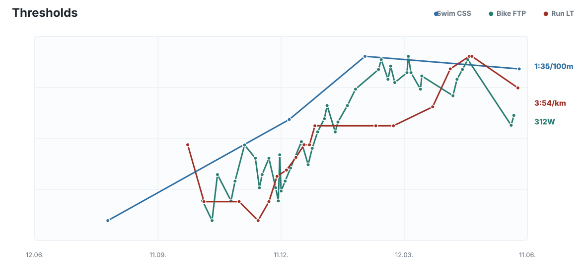
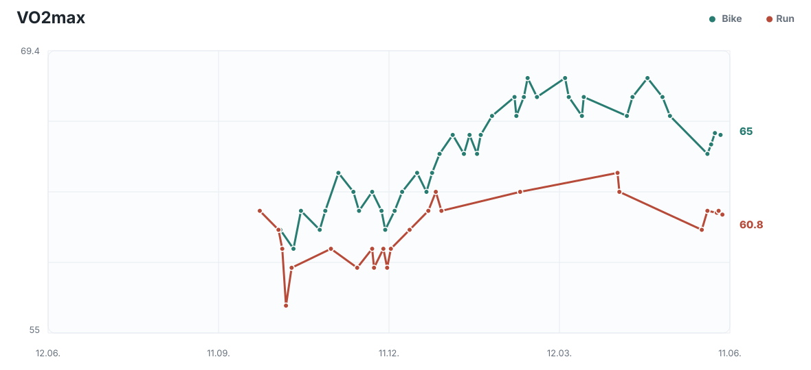
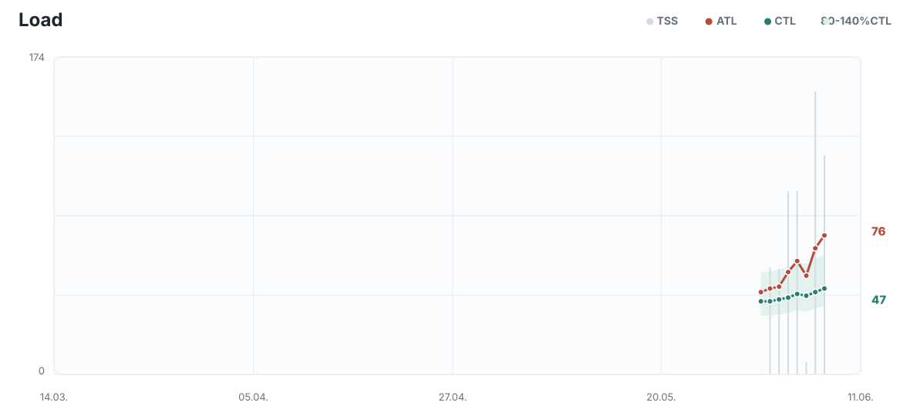
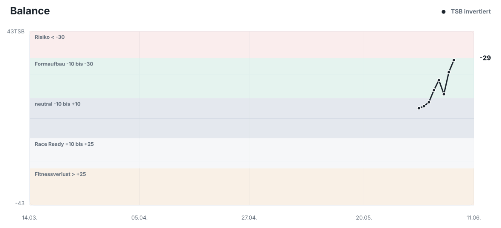
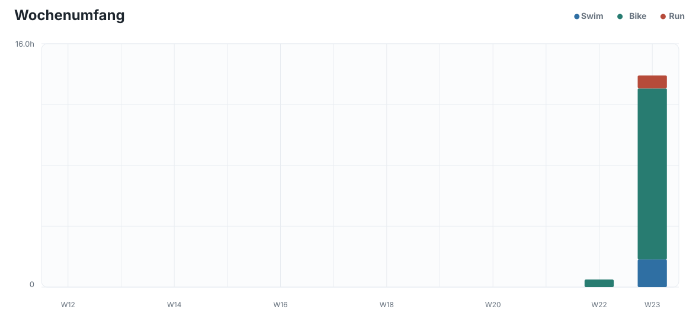
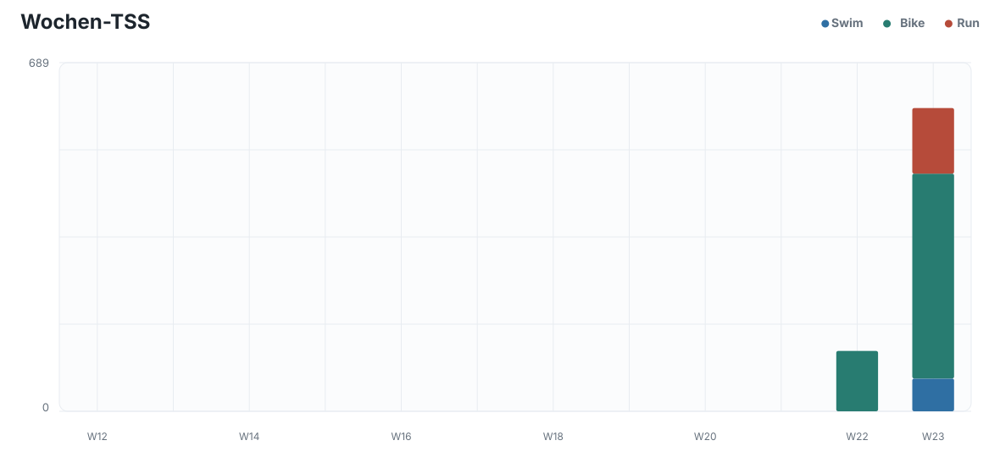
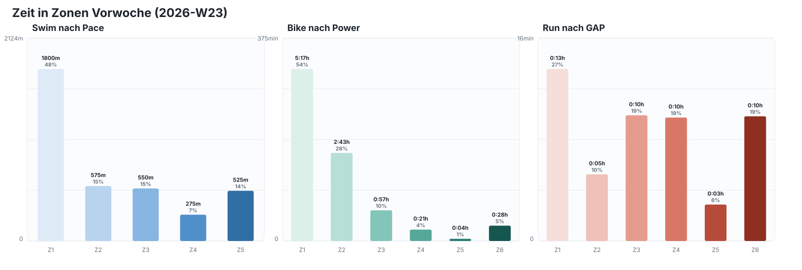
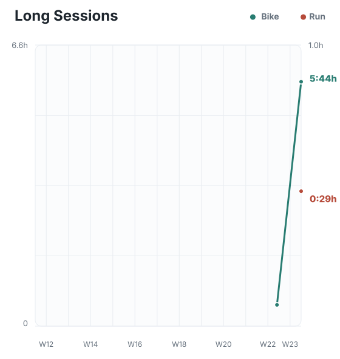
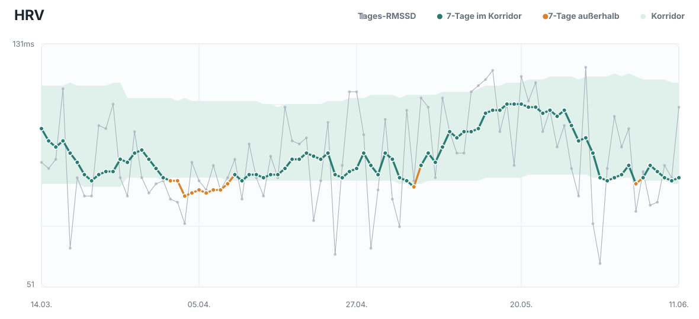
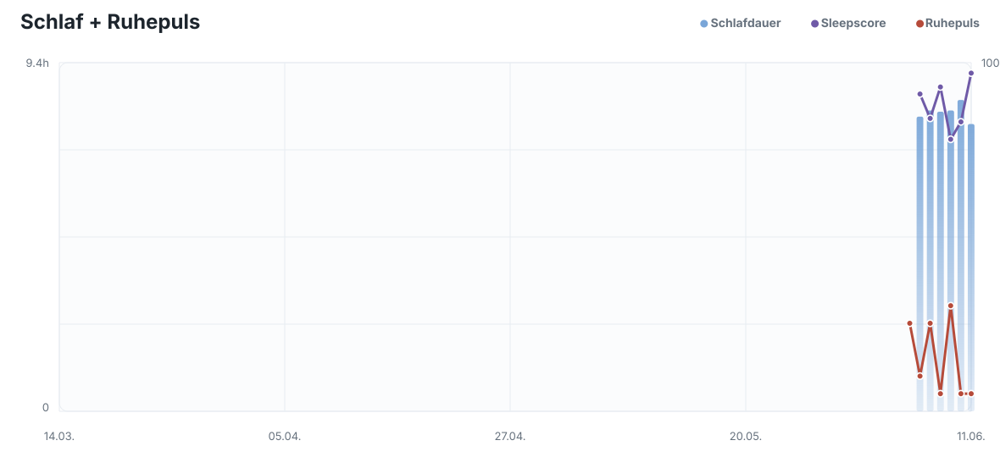
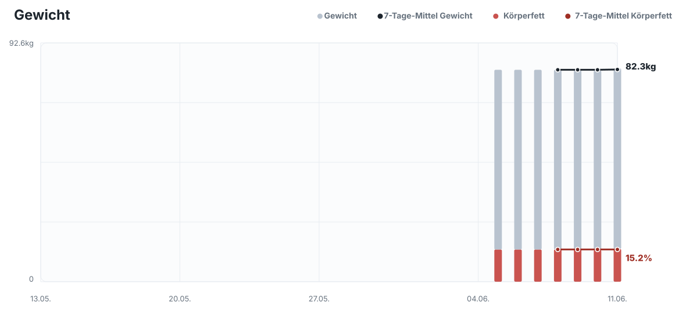
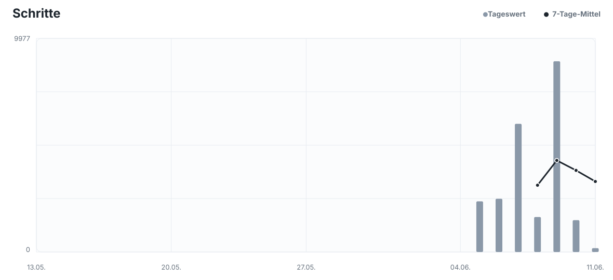